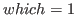
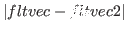
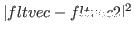
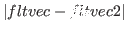
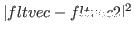
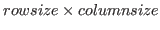
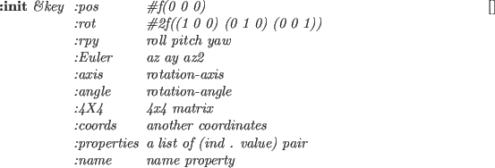
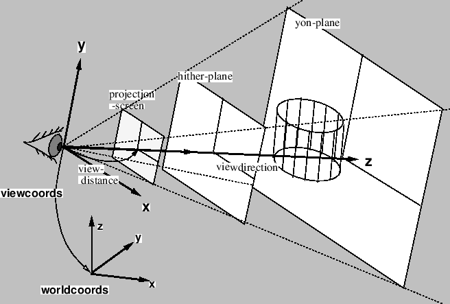
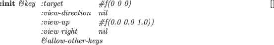
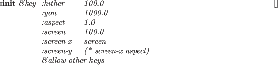

Subsections
float-vectorは、要素が実数である1次元ベクトルである。
float-vectorは、どんなサイズでも良い。
resultが引き数リストで指定されているとき、
そのresultはfloat-vectorであるべきである。
float-vector &rest numbers [関数]
-
-
numbersを要素とするfloat-vectorを新しく作る。
(float-vector 1 2 3)と#F(1 2 3)の違いに注意すること。
前者は、呼ばれたときはいつでもベクトルが生成されるが、
後者は読み込まれたときのみ生成される。
float-vector-p obj [関数]
-
-
objがfloat-vectorであるならば、Tを返す。
v+ fltvec1 fltvec2 &optional result [関数]
-
-
2つのfloat-vectorを加える。
v- fltvec1 &optional fltvec2 result [関数]
-
-
2つのfloat-vectorを差し引く。もし、fltvec2が省略されているならば、
fltvec1の符号が反転される。
v. fltvec1 fltvec2 [関数]
-
- 2つのfloat-vectorの内積を計算する。
v* fltvec1 fltvec2 &optional result [関数]
-
-
2つのfloat-vectorの外積を計算する。
v.* fltvec1 fltvec2 fltvec3 [関数]
-
-
スカラー3重積を計算する。(v.* A B C)=(V. A (V* B C))=(V. (V* A B) C)
v fltvec1 fltvec2 [関数]
fltvec1 fltvec2 [関数]
-
-
もし、fltvec1の要素がfltvec2の対応する要素よりすべて小さいとき、
Tを返す。
v fltvec1 fltvec2 [関数]
fltvec1 fltvec2 [関数]
-
-
もし、fltvec1の要素がfltvec2の対応する要素よりすべて大きいとき、
Tを返す。
vmin &rest fltvec [関数]
-
-
fltvecの中のそれぞれの次元における最小値を捜し、
その値でfloat-vectorを新しく作る。vminとvmaxは、
頂点の座標から最小のminimal-boxを見つけるために使用される。
vmax &rest fltvec [関数]
-
-
fltvecの中のそれぞれの次元における最大値を捜し、
その値でfloat-vectorを新しく作る。
minimal-box v-list minvec maxvec [err] [関数]
-
-
与えられたv-listに対してminimal bounding boxを計算し、
その結果をminvecとmaxvecに蓄積する。
もし、実数errが指定されているならば、minimal boxはその比率によって
成長する。すなわち、もしerrが0.01のとき、minvecのそれぞれの
要素はminvecとmaxvecとの距離の1%減少する。
そして、maxvecのそれぞれの要素は1%増加する。
minimal-boxは、minvecとmaxvecとの距離を返す。
scale number fltvec &optional result [関数]
-
-
fltvecのすべての要素をスカラーnumber倍する。
norm fltvec [関数]
-
- fltvecのノルムを求める。
norm2 fltvec [関数]
-
- fltvecのノルムの２乗を求める。
 =(v. fltvec fltvec)
=(v. fltvec fltvec)
normalize-vector fltvec &optional result [関数]
-
-
fltvecのノルムが1.0となるように正規化する。
distance fltvec1 fltvec2 [関数]
-
-
2つのfloat-vectorの距離を返す。

distance2 fltvec1 fltvec2 [関数]
-
-
2つのfloat-vectorの距離の2乗を返す。

homo2normal homovec &optional normalvec [関数]
-
-
同次ベクトルhomovecを正規表現に変換する。
homogenize normalvec &optional homovec [関数]
-
-
正規ベクトルnormalvecを同次表現に変換する。
midpoint p p1 p2 &optional result [関数]
-
-
pは実数で、p1,p2は同次元のfloat-vectorである。
p1
 p2をの比率で等分した点
p2をの比率で等分した点
 を返す。
を返す。
rotate-vector fltvec theta axis &optional result [関数]
-
-
2次元あるいは3次元のfltvecをaxis回りにthetaラジアン
回転する。
axisは、:x, :y, :z, 0, 1, 2, または NILの内の一つである。
axisがNILのとき、fltvecは2次元として扱われる。
3次元空間の任意の軸の回りにベクトルを回転するためには、
rotation-matrixで回転行列を作り、そのベクトルにかければよい。
行列は、要素がすべて実数の2次元の配列である。
ほとんどの関数において行列はどんなサイズでもよいが、
v*, v.*, euler-angle, rpy-angle関数では3次元の行列のみ
扱うことができる。
transform, m*とtransposeは、行列を正方行列に限定せず、
一般のn*m行列に対して処理を行う。
resultパラメータを受けた関数は、計算結果をそこに置く。
そのため、ヒープは使用しない。
すべての行列関数は、正規座標系における変換を考慮しており、
同次座標系は考慮していない。
rpy-angle関数は、回転行列をワールド座標系におけるz,y,x軸回りの
3つの回転角に分解する。
euler-angle関数はrpy-angleと同様に分解するが、
回転軸がローカル座標系のz,y,z軸となっている。
角度が反対方向にも得られるため、これらの関数は2つの解を返す。
; Mat is a 3X3 rotation matrix.
(setq rots (rpy-angle mat))
(setq r (unit-matrix 3))
(rotate-matrix r (car rots) :x t r)
(rotate-matrix r (cadr rots) :y t r)
(rotate-matrix r (caddr rots) :z t r)
;--> resulted r is equivalent to mat
3次元空間の位置と方向の組みを保つために、13.4節に記載されている
coordinatesとcascaded-coordsクラスを使用すること。
matrix &rest elements [関数]
-
-
elementsから行列を新しく作る。
Row x Col = (elementsの数) x (最初のelementの長さ)
elementsは、どの型の列((list 1 2 3)や(vector 1 2 3)や
(float-vector 1 2 3))でもよい。
それぞれの列は行列の行ベクトルとしてならべられる。
make-matrix rowsize columnsize &optional init [関数]
-
-
 の大きさの行列を作る。
の大きさの行列を作る。
matrixp obj [関数]
-
-
もし、objが行列のとき、すなわち、objが2次元の配列で
その要素が実数であるとき、Tを返す。
matrix-row mat row-index [関数]
-
-
行列matからrow-indexで示される行ベクトルを抽出する。
matrix-rowは、setfを使用することにより
行列の特定の行にベクトルを設定することにも使用される。
matrix-column mat column-index [関数]
-
-
行列matからcoloumn-indexで示される列ベクトルを抽出する。
matrix-columnは、setfを使用することにより
行列の特定の列にベクトルを設定することにも使用される。
m* matrix1 matrix2 &optional result [関数]
-
-
matrix1とmatrix2の積を返す。
transpose matrix &optional result [関数]
-
-
matrixの転置行列を返す。すなわち、matrixの列と行を入れ替える。
unit-matrix dim [関数]
-
-
dim
 dimの単位行列を作る。
dimの単位行列を作る。
replace-matrix dest src [関数]
-
-
行列destのすべての要素を同一な行列srcで置き換える。
scale-matrix scalar mat [関数]
-
-
matのすべての要素にscalerを掛ける。
copy-matrix matrix [関数]
-
-
matrixのコピーを作る。
transform matrix fltvector &optional result [関数]
-
-
行列matrixをベクトルfltvectorの左から掛ける。
transform fltvector matrix &optional result [関数]
-
-
行列matrixをベクトルfltvectorの右から掛ける。
rotate-matrix matrix theta axis &optional world-p result [関数]
-
-
rotate-matrixで行列matrixを回転させるとき、
回転軸（:x, :y, :zまたは0,1,2）はワールド座標系あるいは
ローカル座標系のどちらかを与えられる。
もし、world-pにNILが指定されているとき、
ローカル座標系の軸に沿った回転を意味し、回転行列を左から掛ける。
もし、world-pがnon-NILのとき、
ワールド座標系に対する回転行列を作り、回転行列を右から掛ける。
もし、axisにNILが与えられたとき、行列matrixは2次元と仮定され、
world-pの如何にかかわらず2次元空間の回転が与えられる。
rotation-matrix theta axis &optional result [関数]
-
-
axis軸回りの2次元あるいは3次元の回転行列を作る。
軸は:x,:y,:z,0,1,2,3次元ベクトルあるいはNILのどれかである。
2次元回転行列を作るとき、axisはNILでなければならない。
rotation-angle rotation-matrix [関数]
-
-
rotation-matrixから等価な回転軸と角度を抽出し、
実数とfloat-vectorのリストを返す。
rotation-matrixが単位行列のとき、NILが返される。
また、回転角が小さいとき、結果がエラーとなる。
rotation-matrixが2次元のとき、1つの角度値が返される。
rpy-matrix ang-z ang-y ang-x [関数]
-
-
ロール、ピッチ、ヨー角で定義される回転行列を作る。
最初に、単位行列をx軸回りにang-xラジアン回転させる。
次に、y軸回りにang-yラジアン、最後にｚ軸回りにang-z
ラジアン回転させる。
すべての回転軸はワールド座標系で与えられる。
rpy-angle matrix [関数]
-
-
matrixの2組のロール、ピッチ、ヨー角を抽出する。
Euler-matrix ang-z ang-y ang2-z [関数]
-
-
3つのオイラー角で定義される回転行列を作る。
最初に単位行列をz軸回りにang-z回転させ、次にy軸回りにang-y
回転させ、最後にz軸回りにang2-z回転させる。
すべての回転軸はローカル座標系で与えられる。
Euler-angle matrix [関数]
-
-
matrixから2組のオイラー角を抽出する。
lu-decomposeとlu-solveは、線形の連立方程式を
解くために用意されている。
最初に、lu-decomposeは行列を下三角行列を上三角行列に分解する。
もし、行列が特異値なら、lu-decomposeはNILを返す。
そうでなければ、lu-solveに与えるべき順列ベクトルを返す。
lu-solveは、与えられた定数ベクトルの解をLU行列で計算する。
この手法は、同じ係数行列と異なった定数ベクトルのたくさんの組に対して
解を求めたいときに効果的である。
simultaneous-equationは、1つの解だけを求めたいときにもっとも
手軽な関数である。
lu-determinantは、LU分解された行列の行列式を計算する。
inverse-matrix関数は、lu-decomposeを1回とlu-solveをn回
使って逆行列を求める。
3*3行列での計算時間は約4msである。
lu-decompose matrix &optional result [関数]
-
-
matrixにLU分解を実行する。
lu-solve lu-mat perm-vector bvector [result] [関数]
-
-
LU分解された1次連立方程式を解く。
perm-vectorは、lu-decomposeで返された結果でなければならない。
lu-determinant lu-mat perm-vector [関数]
-
-
LU分解された行列の行列式を求める。
simultaneous-equation mat vec [関数]
-
-
係数がmatで、定数がvecで記述される1次連立方程式を解く。
inverse-matrix mat [関数]
-
-
正方行列matの逆行列を求める。
pseudo-inverse mat [関数]
-
-
特異値分解を用いて擬似逆行列を求める。
座標系
座標系と座標変換は、coordinatesクラスで表現される。
4*4の同次行列表現の代わりに、
Euslisp内で座標系は、高速性と一般性のために
3*3の回転行列と3次元位置ベクトルの組で表現される。
coordinates [クラス]
:super propertied-object
:slots (pos :type float-vector
rot :type array)
-
- 位置ベクトルと3x3の回転行列の組みで座標系を定義する。
coordinates-p obj [関数]
-
-
objがcoordinatesクラスかまたはそのサブクラスのインスタンス
のとき、Tを返す。
:rot [メソッド]
-
-
この座標系の3x3回転行列を返す。
:pos [メソッド]
-
-
この座標系の3次元位置ベクトルを返す。
:newcoords newrot &optional newpos [メソッド]
-
-
newrotとnewposでこの座標系を更新する。
newposが省略された時はnewrotにはcoordinatesのインスタンスを
与える。
この座標系の状態が変化するときはいつでも、このメソッドを用いて新しい
回転行列と位置ベクトルに更新するべきである。
このメッセージはイベントを伝えて他の:updateメソッドを呼び出す。
:replace-coords newrot &optional newpos [メソッド]
-
-
:newcoordsメソッドを呼び出さずにrotとposスロットを変更する。
newposが省略された時はnewrotにはcoordinatesのインスタンスを与える。
:coords [メソッド]
-
-
:copy-coords &optional dest [メソッド]
-
-
もしdestが与えられなかったとき、:copy-coordsは同じrotとpos
スロットを持つ座標系オブジェクトを作る。
もし、destが与えられたとき、dest座標系にこの座標系のrotとposを
コピーする。
:reset-coords [メソッド]
-
-
この座標系の回転行列を単位行列にし、位置ベクトルをすべてゼロにする。
:worldpos [メソッド]
-
-
:worldrot [メソッド]
-
-
:worldcoords [メソッド]
-
-
このオブジェクトのワールド座標系における位置ベクトル・回転行列・座標系
を計算する。
その座標系は、いつもワールド座標系で表現されていると仮定され、
これらのメソッドは簡単にposとrotとselfを返すことができる。
これらのメソッドはcascaded-coordsクラスと互換性がとられている。
cascaded-coordsではワールド座標系での表現と仮定していない。
:copy-worldcoords &optional dest [メソッド]
-
-
最初に、ワールド座標系が計算され、destにコピーされる。
もし、destが指定されてないとき、新たにcoordinates
オブジェクトを作る。
:rotate-vector vec [メソッド]
-
-
この座標系の回転行列によってvecを回転させる。すなわち、
この座標系で表現される方向ベクトルをワールド座標系における表現
に変換する。
この座標系の位置は、回転に影響を与えない。
:transform-vector vec [メソッド]
-
-
この座標系で表現されるvecをワールド座標系の表現に変換する。
:inverse-transform-vector vec [メソッド]
-
-
ワールド座標系におけるvecをローカル座標系の表現に逆変換する。
:transform trans &optional (wrt :local) [メソッド]
-
-
wrt座標系で表現されるtransによってこの座標系を変換する。
transは座標系の型でなければならないし、wrtは
:local, :parent, :worldのキーワードあるいはcoordinatesの
インスタンスでなければならない。
もしwrtが:localのとき、transをこの座標系の右
から適用する。もしwrtが:world, :parentのとき、
transを左から掛ける。
もしwrtがcoordinatesの型であるとき、wrt座標系で表現される
transは最初にワールド座標系の表現に変換され、左から掛ける。
:move-to trans &optional (wrt :local) [メソッド]
-
-
wrtで表現されるtransでこの座標系のrotとpos
を置き換える。
:translate p &optional (wrt :local) [メソッド]
-
-
このオブジェクトの位置をwrt座標系で相対的に変更する。
:locate p &optional (wrt :local) [メソッド]
-
-
この座標系の位置をwrt座標系で絶対的に変更する。
もし、wrtが:localのとき、:translateと同一な
効果を生む。
:rotate theta axis &optional (wrt :local) [メソッド]
-
-
axis軸回りにthetaラジアンだけ相対的にこの座標系を回転させる。
axisは、軸キーワード(:x, :y, :z)あるいは任意のfloat-vector
である。
axisはwrt座標系で表現されていると考える。
よって、もしwrtが:localでaxisが:zであるとき、
座標系はローカル座標系のz軸回りに回転される。
もしwrtが:world, :parentであるとき、ワールド座標系のz軸回りに
回転される。
言い換えると、もしwrtが:localのとき、
回転行列はこの座標系の右から掛けられる。
そして、もしwrtが:worldあるいは:parentのとき、
回転行列は左から掛けられる。
wrtが:worldあるいは:parentでさえ、
この座標系のposベクトルは変化しない。
本当にワールド座標系の軸回りに回転するためには、
回転を表現するcoordinatesクラスのインスタンスを
:transformメソッドに与えなければならない。
:orient theta axis &optional (wrt :local) [メソッド]
-
-
rotを強制的に変更する。:rotateメソッドの絶対値版である。
:inverse-transformation [メソッド]
-
-
この座標系の逆変換を持つ座標系を新しく作る。
:transformation coords (wrt :local) [メソッド]
-
-
この座標系と引き数で与えられるcoordsとの間の変換を作る。
もし、wrtが:localであるとき、ローカル座標系で表現される。
すなわち、もしこの:transformationの結果を:transformの引き数として
wrt=:localと一緒に
与えたとき、この座標系はcoordsと同一な座標系に変換される。
:Euler az1 ay az2 [メソッド]
-
-
オイラー角(az1, ay, az2)で表現される回転行列をrotに
設定する。
:roll-pitch-yaw roll pitch yaw [メソッド]
-
-
ロール・ピッチ・ヨー角で表現される回転行列をrotに設定する。
:4x4 &optional mat44 [メソッド]
-
-
もし、mat44として4x4行列が与えられるとき、3x3回転行列と3次元位置ベクトル
の座標表現に変換される。
もし、mat44が与えられないとき、この座標系の表現を
4x4の同次行列表現に変換して返す。
:init &key :pos #f(0 0 0) [メソッド]
:rot #2f((1 0 0) (0 1 0) (0 0 1))
:rpy roll pitch yaw
:Euler az ay az2
:axis rotation-axis
:angle rotation-angle
:4X4 4x4 matrix
:coords another coordinates
:properties a list of (ind . value) pair
:name name property
-
- このcoordinatesオブジェクトを初期化し、rotとposを設定する。
それぞれのキーワードの意味は、以下に示す通りである。
- :dimension
- 2あるいは3 (デフォルトは 3)
- :pos
- 位置ベクトルを指定する (デフォルトは #f(0 0 0))
- :rot
- 回転行列を指定する (デフォルトは単位行列)
- :Euler
- オイラー角として3つの要素の列を与える
- :rpy
- ロール・ピッチ・ヨー角として3つの要素の列を与える
- :axis
- 回転軸 (:x,:y,:z あるいは任意のfloat-vector)
- :angle
- 回転角 (:axisと一緒に使用)
- :wrt
- 回転軸を示す座標系 (デフォルトは :local)
- :4X4
- 4X4 行列(posとrotを同時に指定)
- :coords
- coordsからrotとposをコピーする
- :name
- :name値を設定する。
:angleは:axisと組みで唯一使用することができる。
その軸は:wrt座標系で決定される。
:wrtと関係なしに:Eulerはローカル座標系で定義されるオイラー角
（az1, ayとaz2）をいつも指定する。
また、:rpyはワールド座標系のz, yとx軸回りの角度
を指定する。
:rot, :Euler, :rpy, :axis, :4X4の中から２つ以上を連続で指定することは
できない。しかしながら、指定してもエラーは返さない。
axisと:angleパラメータには列を指定することができる。
その意味は、与えられた軸回りの回転を連続的に処理する。
属性とその値の組みのリストを:propertiesの引き数として
与えることができる。これらの組みは、この座標系のplistにコピーされる。
cascaded-coords [クラス]
:super coordinates
:slots (parent descendants worldcoords manager changed)
-
- 連結された座標系を定義する。cascaded-coordsは、
しばしばcascoordsと略す。
:inheritance [メソッド]
-
-
このcascaded-coordsの子孫をすべて記述した継承treeリストを返す。
もし、aとbがこの座標系の直下の子孫でcがaの
子孫であるとき、((a (c)) (b))を返す。
:assoc childcoords &optional relative-coords [メソッド]
-
-
childcoordsは、この座標系の子孫として関係している。
もし、childcoordsが既に他のcascaded-coordsにassocされて
いるとき、childcoordsはそれぞれのcascaded-coordsが1つの親しか
持っていないならdessocされる。
ワールド座標系におけるchildcoordsの方向あるいは位置は変更されない。
:dissoc childcoords [メソッド]
-
-
この座標系の子孫リストからchildcoordsを外す。
ワールド座標系におけるchildcoordsの方向あるいは位置は変更されない。
:changed [メソッド]
-
-
この座標系の親座標系が変更されていることを通知する。
また、もっとあとでワールド座標系が要求されたとき、ワールド座標系を再計算する
必要がある。
:update [メソッド]
-
-
現在のワールド座標系を再計算するために:worldcoordsメソッド
を呼び出す。
:worldcoords [メソッド]
-
-
ルートの座標系からこの座標系までの全ての座標系を連結させることにより、
この座標系をワールド座標系で表現したcoordinatesオブジェクトで返す。
その結果は、このオブジェクトが持ち、後に再利用される。
よって、この結果の座標系を変更すべきでない。
:worldpos [メソッド]
-
-
ワールド座標系で表現したこの座標系のrotを返す。
:worldrot [メソッド]
-
-
ワールド座標系で表現したこの座標系のposを返す。
:transform-vector vec [メソッド]
-
-
vecをこのローカル座標系での表現とみなして、ワールド座標系での
表現に変換する。
:inverse-transform-vector vec [メソッド]
-
-
ワールド座標系で表現されるvecをこのローカル座標系の表現に逆変換する。
:inverse-transformation [メソッド]
-
-
この座標系の逆変換を表現するcoordinatesのインスタンスを作る。
:transform trans &optional (wrt :local) [メソッド]
-
-
:translate fltvec &optional (wrt :local) [メソッド]
-
-
:locate fltvec &optional (wrt :local) [メソッド]
-
-
:rotate theta axis &optional (wrt :local) [メソッド]
-
-
:orient theta axis &optional (wrt :local) [メソッド]
-
-
coordinatesクラスの記述を参照すること。
make-coords &key :pos :rot :rpy :Euler :angle :axis :4X4 :coords :name [関数]
-
-
make-cascoords &key :pos :rot :rpy :Euler :angle :axis :4X4 :coords :name [関数]
-
-
coords &key :pos :rot :rpy :Euler :angle :axis :4X4 :coords :name [関数]
-
-
cascoords &key :pos :rot :rpy :Euler :angle :axis
:4X4 :coords :name [関数]
-
-
これらの関数は、すべてcoordinatesあるいはcascaded-coordsを
新しく作る。
キーワードパラメータについては、coordinatesクラスの:initメソッドを
見ること。
transform-coords coords1 coords2 &optional (coords3 (coords)) [関数]
-
-
coords1がcoords2に左から適用（乗算）される。
その積はcoords3に蓄積される。
transform-coords* &rest coords [関数]
-
-
coordsにリスト表現されている変換を連結させる。
連結された変換で表現されるcoordinatesのインスタンスを返す。
wrt coords vec [関数]
-
-
vecをcoordsにおける表現に変換する。
その結果は(send coords :transform-vector vec)と同一である。
変換行列Tを の同次行列表現として以下のように表したした時の、
coordinatesとの関係を説明する。
の同次行列表現として以下のように表したした時の、
coordinatesとの関係を説明する。
 は行列、
は
は行列、
は 行列(eus内部処理
では要素数3のfloat-vector)であって、
EusLispにおけるcoordinatesクラスは
行列(eus内部処理
では要素数3のfloat-vector)であって、
EusLispにおけるcoordinatesクラスは
 は の回転行列と
3 次元位置ベクトルの組で表現されており、
スロット変数のrotとposは、それぞれ、
、
に対応する。
は の回転行列と
3 次元位置ベクトルの組で表現されており、
スロット変数のrotとposは、それぞれ、
、
に対応する。
coordinates classのメソッドを用いて、以下のように
と
を取り出せる。
以下、Tはcoordinateクラスのインスタンスである。
(send T :rot)
-
-

(send T :pos)
-
-
以下、
は3次元ベクトルである。
(send T :rotate-vector
)
-
-

(send T :inverse-rotate-vector
)
-
-

(send T :transform-vector
)
-
-

ローカル座標系Tで表されたベクトルをワールド座標系で表されたベクトルに変換する
(send T :inverse-transform-vector
)
-
-

ワールド座標系で表されたベクトルをローカル座標系Tで表されたベクトルに変換する
(send T :inverse-transformation)
-
-

逆行列を返す。
(send T :transformation A (&optional (wrt :local)))
-
-
wrt == :local のとき、
 を返す
を返す
wrt == :world のとき、 を返す
を返す
wrt == W (coordinates class) のとき、
 を返す
を返す
以下、A は coordinatesクラスのインスタンスである。
 はスロット変数と与えられたインスタンス（行列またはベクトル）が同一になることを表す。
一方の変更が、他方の変更に反映されるため、注意して使用すること。
 は代入を表す。
(send T :newcoords A)
-
-


(send T :newcoords
)
-
-

(send T :move-to A (&optional (wrt :local)))
-
-
wrt == :local のとき、

wrt == :world のとき、

wrt == W (coordinates class) のとき、

(send T :translate
(&optional (wrt :local)))
-
-
wrt == :local のとき、
wrt == :world のとき、

wrt == W (coordinates class) のとき、

(send T :locate
(&optional (wrt :local)))
-
-
wrt == :local のとき、
wrt == :world のとき、

wrt == W (coordinates class) のとき、

(send T :transform A (&optional (wrt :local)))
-
-
wrt == :local のとき、
wrt == :world のとき、

wrt == W (coordinates class) のとき、

Travis CI User
2017-03-07